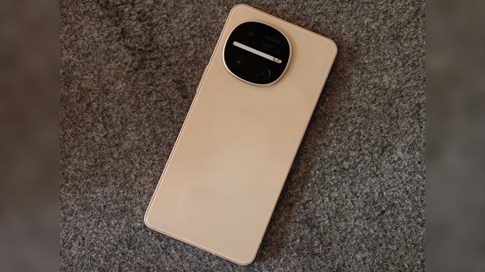
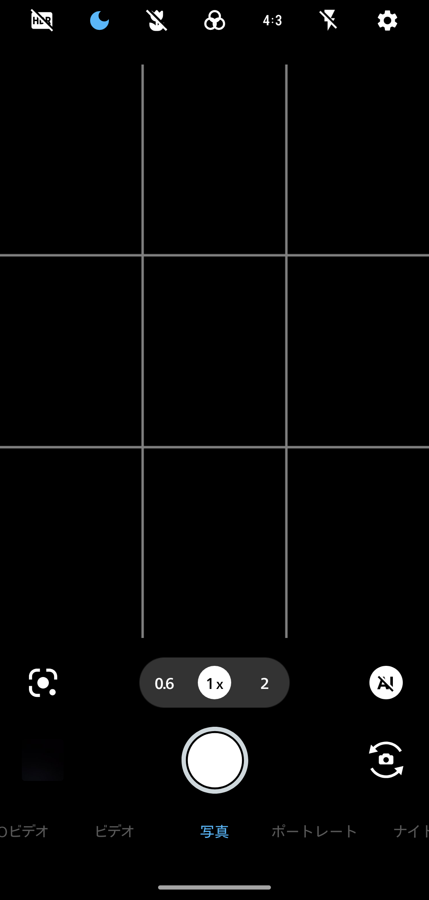
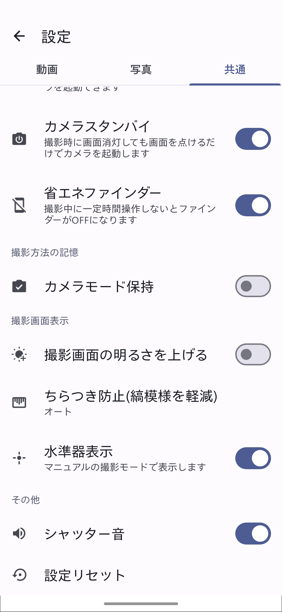

AQUOSのシャッター音を消す方法

SIMフリー版と楽天モバイル版に限りシャッター音が消せる
AQUOSは楽天モバイル版とSIMフリー版で2024年以降発売のモデルに限り、カメラアプリの設定を変更することでシャッター音が消せる。 ここではその方法を解説する。
方法
1.カメラアプリを開く

2.設定画面を開く
3. "共通" タブから "シャッター音" をオフにする

デメリット
･対応機種は2024年以降発売の楽天モバイル版とSIMフリー版のみ
2023年以前のモデル、または楽天モバイルを除くキャリア版ではシャッター音が消せない。
プロフィール

高度情報社会の最先端を駆け抜ける

プライバシーポリシー
プライバシーポリシー
×